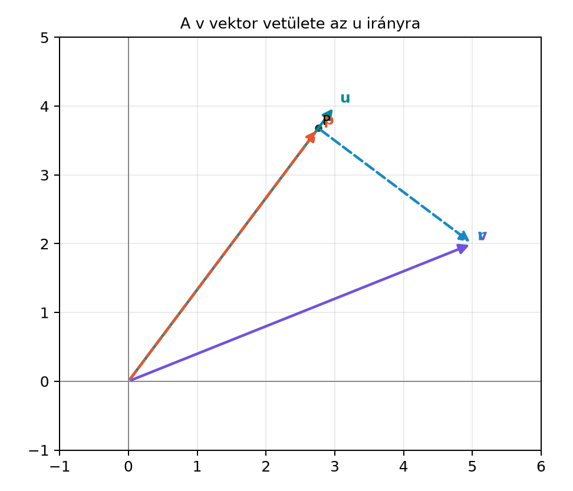

4.4.1 Motiváció: miért akarunk egy
vektort adott irányra vetíteni?
A gépi tanulásban és a jelfeldolgozásban gyakran tudjuk, hogy egy
vektorban van egy számunkra értékes, „hasznos” irány, és van egy másik,
zavaró komponens. Például egy mozgásérzékelő jele egy adott tengely
mentén nagy kilengéseket mutat, de van egy lassú, konstans eltolódás is:
szeretnénk a jelet szétválasztani arra a részre, amelyik a tengely
irányába esik, és arra, amelyik merőleges rá. Ugyanez a helyzet akkor
is, amikor egy beágyazásvektorból el akarunk távolítani egy nem kívánt
„torzítási irányt”: kivonjuk belőle azt a részt, amelyik abba az irányba
mutat.
A vetítés tehát a vektorok felbontásának
alapművelete: egy vektort egy adott iránnyal párhuzamos és arra
merőleges részre bont. Ez lesz később az altérre vetítés, a legkisebb
négyzetek módszere és a gradiensmódszer egyik építőköve is.
4.4.2 Szemléletes kép: a talppont
és a merőleges maradék
A síkban legyen
az az irány, amelyre vetítünk, és legyen
a vetítendő vektor. A célunk az origón átmenő,
irányú egyenesen megtalálni azt a pontot, amelyik a legközelebb van a
végpontjához. A geometriai kép szerint ez a pont az a talppont, ahonnan
a
-hez
húzott szakasz merőleges az egyenesre.

A v vektor vetülete az u irányra -
Számpélda: u=(3,4), v=(5,2). A p vektor a vetület, az r maradék
merőleges az u irányra. Az origóból a p végpontjába húzott szakasz az L
egyenesre esik.
Az ábrán
a vetület,
pedig a maradékvektor. Azt várjuk, hogy
merőleges
-ra,
és hogy a
végpontja valóban a legközelebbi pontja a
-nek
az egyenesen.
4.4.3 Definíció: skalár vetület és
vektor vetület
Legyen
egy rögzített irány, és legyen
tetszőleges vektor. Jelölje
az
irányú egységvektort. A
vektornak az
irányra vett skalár vetülete (előjeles hossza)
Ez egy skalár: azt mondja meg, hogy a
„milyen hosszan és milyen irányban” mutat az
tengelyén. Ha
,
akkor a vetület az
irányába mutat; ha
,
akkor azzal ellentétes irányba.
A
vektor vektor vetülete az
irányra:
Mivel
,
a két alak egyenértékű. A vektor vetület tehát az a vektor, amelyik az
egyenesére esik, és amelynek előjeles hossza
.
A maradékvektor
pedig merőleges az
-ra.
Ezt a felbontást párhuzamos–merőleges felbontásnak nevezzük.
4.4.4 Levezetés a merőlegességi
feltételből
A vektor vetületet pontosan úgy akarjuk megválasztani, hogy a maradék
merőleges legyen az irányra. Ezt a feltételt felhasználva kiszámíthatjuk
a képletet.
Állítás. Ha
,
akkor a fenti
vektor az egyetlen olyan vektor az
egyenesén, amelyre
Bizonyítás. Mivel
az
egyenesén van, felírható
alakban valamilyen
skalárral. Azt akarjuk, hogy a maradék
merőleges legyen
-ra,
azaz
A skalárszorzat disztributivitása miatt
Átrendezve:
Mivel
,
az osztás mindig elvégezhető. Tehát
és ez az egyetlen ilyen
érték. ∎
Ha az
irányú egységvektort használjuk, a képlet egyszerűbb:
feltéve, hogy
.
4.4.5 Kidolgozott példa: vetítés
kis egész számokkal
Legyen
Először kiszámítjuk a szükséges skalárszorzatokat:
A vetületi együttható:
A vektor vetület:
A maradékvektor:
Ellenőrizzük, hogy
valóban merőleges
-ra:
Mivel
,
a
valóban párhuzamos
-val.
A felbontás tehát:
Az
hossza megadja a
végpontjának távolságát az egyenestől:
4.4.6 A legközelebbi pont
tulajdonsága
A vetítés egyik legfontosabb tulajdonsága, hogy a
végpontja az origón átmenő,
irányú
egyenes legközelebbi pontja a
végpontjához. Ezt a tulajdonságot érdemes külön is kimondani, mert ez
lesz a későbbi legkisebb négyzetek módszerének magja.
Állítás. Legyen
az origón átmenő,
irányú egyenes. Ha
,
akkor minden
pontra
és egyenlőség csak akkor áll fenn, ha
.
Bizonyítás. Írjuk fel
alakban. A
vektort két merőleges részre bontjuk:
Mivel
és
is rajta van az
egyenesen, a
vektor párhuzamos
-val.
A
vektor viszont a vetítés definíciója szerint merőleges
-ra,
tehát a két összetevő merőleges. A Pitagorasz-tétel szerint:
Mivel
,
ezért
Egyenlőség pontosan akkor van, ha
,
azaz
.
Ezzel bebizonyítottuk, hogy a vetület valóban a legközelebbi pont az
egyenesen. ∎
Ez a tétel szemléletesen azt mondja, hogy a legrövidebb út a
merőleges szakasz. Ha az egyenes bármely más pontját választjuk, a
távolság egy derékszögű háromszög átfogója lesz, ami mindig hosszabb a
merőleges befogónál.
4.4.7 Számítógépes ellenőrzés
NumPy-ban
import numpy as npu = np.array([3.0, 4.0])v = np.array([5.0, 2.0])c = (v @ u) / (u @ u) # v·u / u·up = c * u # vektor vetületr = v - p # merőleges maradékprint("c =", c)print("p =", p)print("r =", r)print("r merőleges u-ra?", np.isclose(r @ u, 0.0))print("r merőleges p-re?", np.isclose(r @ p, 0.0))print("r hossza =", np.linalg.norm(r))
Várt kimenet:
c = 0.92
p = [2.76 3.68]
r = [ 2.24 -1.68]
r merőleges u-ra? True
r merőleges p-re? True
r hossza = 2.8
4.4.8 Kapcsolat a gépi
tanulással
A vetítés egyik gyakori alkalmazása, amikor egy adatvektorból el
akarunk távolítani egy ismert, nem kívánt irányt. Tegyük fel, hogy van
egy
torzítási irány, például olyan irány a beágyazások terében, amely egy
zavaró tulajdonságot kódol. Minden
beágyazásból kivonhatjuk a
-re
vett vetületét:
A definícióból azonnal következik, hogy
tehát a tisztított vektor már merőleges a
irányra. Numerikusan ez azt jelenti, hogy a torzítási irány menti
komponens eltűnik, miközben a vektor többi része megmarad.
Például legyen a torzítási irány
és egy beágyazás
.
Ekkor
A vetület:
A tisztított vektor:
Valóban:
,
tehát
merőleges a
irányra. Ez a művelet vektoronként elvégezhető, ezért nagy
beágyazás-mátrixok soraira is könnyen alkalmazható.
4.4.9 Tipikus hibák és
félreértések
A skalár vetület és a vektor vetület
összekeverése. A skalár vetület
egy szám, amely lehet negatív is. A vektor vetület
maga a vektor. Ha csak
-et
számolunk ki, még nem kaptuk meg az egyenesen lévő pontot.
A normálás elhagyása. Ha
nem egységvektor, akkor a vetület képlete nem
-szor
,
hanem
A nevező elhagyása gyakori hiba, amikor valaki a vetületet egyszerűen
-ként
írja fel.
A maradékvektor előjele. A maradék
,
nem pedig
.
Ha valaki
-t
számol, az eredmény általában nem merőleges
-ra.
Nullvektorra vetítés. A vetület csak akkor
értelmezhető, ha
.
Ha
,
akkor
,
és nullával osztanánk.
4.4.10 Feladatok
Fogalmi kérdés. Fogalmazd meg saját szavaiddal,
mi a különbség a skalár vetület és a vektor vetület között. Milyen lehet
a skalár vetület előjele, és mit jelent a negatív előjel?
Kézi számolás. Legyen
és
.
Számítsd ki a
vektor
irányra vett vetületét, bontsd fel
-t
-val
párhuzamos és arra merőleges részre, és ellenőrizd, hogy a maradék
merőleges
-ra.
NumPy-feladat. Írj NumPy-kódot, amely
bemenetként megkapja
-t
és
-t,
kiszámítja a vektor vetületet és a maradékot, majd
np.isclose segítségével ellenőrzi a
merőlegességet.
Gondolkodtató feladat. Legyen
és
.
Mi lesz a
irányú vetület, és mi a maradék? Miért éppen ez a maradék lesz a vektor
második koordinátája? Magyarázd meg geometriailag is.
4.4.11 Megoldások
A skalár vetület az
irányú egységvektorra vett előjeles hossz:
A vektor vetület pedig ez a skalár szorozva az
egységvektorral:
.
A skalár vetület lehet pozitív, nulla vagy negatív. Ha negatív, akkor a
vetület az
irányával ellentétes irányban mutat.
Számoljuk ki:
Így
A maradék:
Ellenőrzés:
Mivel
,
a
párhuzamos
-val,
az
pedig merőleges rá.
Egy lehetséges kód:
import numpy as npdef projection_and_residual(u, v): u = np.asarray(u, dtype=float) v = np.asarray(v, dtype=float) p = (v @ u) / (u @ u) * u r = v - preturn p, ru = np.array([1.0, -2.0])v = np.array([4.0, 3.0])p, r = projection_and_residual(u, v)print("p =", p)print("r =", r)print("r merőleges u-ra?", np.isclose(r @ u, 0.0))
Várt kimenet:
p = [-0.4 0.8]
r = [4.4 2.2]
r merőleges u-ra? True
Mivel
egységvektor, a vetület egyszerűen
A maradék:
Ez éppen a második koordináta, mert a
irány az
-tengely.
A vetítés megtartja az
-tengelyre
eső vetületet, a maradék pedig az
-tengelyre
eső részt adja. Geometriailag a
pontból az
-tengelyre
húzott merőleges szakasz talppontja az
pont, a maradékvektor pedig függőleges.
4.4.12 Rövid összefoglaló
A vetítés egy vektort egy adott iránnyal párhuzamos és arra merőleges
részre bont. A vektor vetület képlete
.
A maradék
mindig merőleges
-ra.
A vetület végpontja az origón átmenő,
irányú egyenes legközelebbi pontja a
végpontjához, amit a Pitagorasz-tétellel bizonyítottunk. Ha
egységvektor, a képlet
alakra egyszerűsödik. A vetítés segítségével nem kívánt irányokat
távolíthatunk el adatvektorokból, például beágyazásokból.